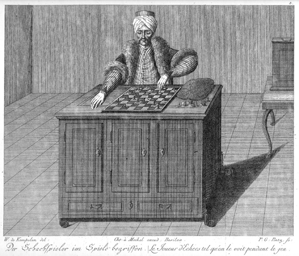
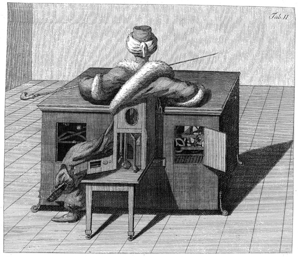
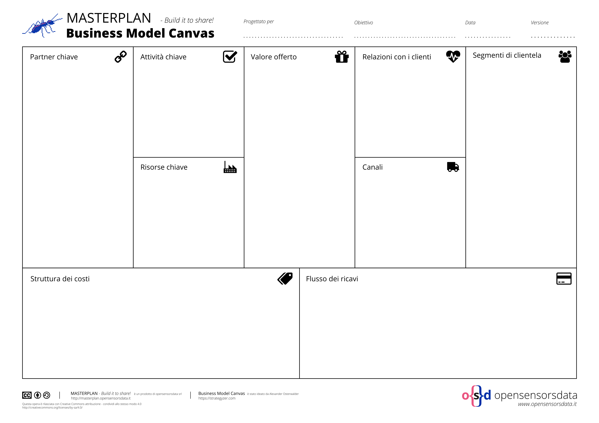

I droni come automi della ricerca aperta
16 marzo 2016 by opensensordata / @lucacorsato
l'intruso qui presente
luca corsato
fin dal 2011 rompo le balle su opendata, open knowledge. dal 2013, non contento, pure su knowledge management dal 2015, sprezzante del pericolo, con opensensorsdata pure su open business model e project managementavvertenza
la singolarità è già tra noi
il rapporto uomo-macchina è sempre più nodale
Drone
In musica il bordone (drone in inglese) è un effetto armonico o monofonico di accompagnamento in cui una nota o un accordo sono suonati in modo continuo per buona parte o per l'intera composizione, sostenuti o ripetuti, e spesso determinano la tonalità della composizione stessa
fonte WikipediaDrone
Un aeromobile a pilotaggio remoto o APR, comunemente noto come drone, è un velivolo caratterizzato dall'assenza del pilota umano a bordo. Il suo volo è controllato dal computer a bordo del velivolo, sotto il controllo remoto di un navigatore o pilota, sul terreno o in un altro veicolo.
[...] tali sistemi possano consentire l'esecuzione di missioni "noiose, sporche e pericolose" (dull, dirty and dangerous) spesso con costi minori rispetto ai velivoli tradizionali.
fonte WikipediaUn sottofondo di rilevazioni a sostegno della Ricerca
Più aumenta l'automazione, più deve aumentare l'intelligenza progettuale e gestionale
In guerra e in amore ogni drone è lecito?
Automa
Un automa è una macchina in grado di operare in modo autonomo. Il termine è talvolta usato per indicare un robot, più precisamente un robot autonomo, ma più spesso descrive una macchina semovente non elettronica (come un automa meccanico), specialmente quelle costruite per assomigliare ad esseri umani o ad animali. Il termine automa deriva dal greco αὐτόματος, automatos, “che agisce di propria volontà”.
fonte WikipediaIl Turco era un automa del '700
Ma era un trucco o un drone che svolgeva un'attività?
Grado di automazione di un drone
- La rilevazione viene resa automatica
- il percorso viene impostato dall'uomo
- Quanto incideranno nelle scelte le 3 Leggi della robotica di Asimov?
- Un robot non può recar danno a un essere umano né può permettere che, a causa del proprio mancato intervento, un essere umano riceva danno.
- Un robot deve obbedire agli ordini impartiti dagli esseri umani, purché tali ordini non contravvengano alla Prima Legge.
- Un robot deve proteggere la propria esistenza, purché questa autodifesa non contrasti con la Prima o con la Seconda Legge.
La Ricerca e l'automazione
Rispetto ai sensori statici, il drone impone una scelta di gradi di automazione e di conseguente condivisione
oggetti, agenti ed enti estrattori di elementi conoscitivi
Il Drone è un oggetto
quando esegue un percorso attraverso dei comandi
Il Drone è un agente
quando, attraverso un'intelligenza propria, rileva dati nel percorso definito
Il Drone è un ente
quando condividendo i dati in un ambito scientifico, trasmette la base conoscitiva di un contesto
Il Drone fornisce le basi per dotare di senso un ambito di ricerca
i dati e la competenza del ricercatore costituiscono il senso
Senso (dati + competenza) + Condivisione = Valore
all'interno di un metodo progettuale:
- Mobilitare
- Comprendere
- Progettare
- Implementare
- Gestire
Definiamo il progetto
Il Senso acquista valore se condiviso
è la relazione tra lo studio dei Ricercatori e la rete dei dati automatici a generare valore (economico e scientifico)
Condividere per non restare appesi
Grazie
luca corsato www.opensensorsdata.it | Masterplan - Build it to Share! | doc.opensensorsdata.it